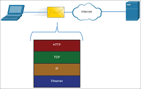
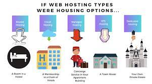
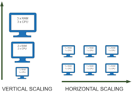

Protocol Stack:
In computer networking, a protocol stack refers to a set of communication
protocols that are used to establish communication between devices or
applications in a network. These protocols are arranged in a layered
architecture, with each layer performing a specific function.
The most widely used protocol stack in web development is the TCP/IP
(Transmission Control Protocol/Internet Protocol) protocol stack. It
consists of four layers: the application layer, transport layer, network
layer, and data link layer. Each layer is responsible for a different
aspect of communication, such as data formatting, data transmission,
addressing, and error detection.
Application Layer:
The application layer is responsible for interacting with
applications, such as web browsers or email clients.
Transport Layer:
The transport layer provides reliable data transmission and flow
control between applications.
Network Layer:
The network layer handles the routing of data packets between
different networks.
Data Link:
The data link layer defines the format of the data transmitted over
the physical network.

Web developers typically use the application layer protocols of the
TCP/IP stack to develop web applications. These protocols include HTTP (Hypertext Transfer Protocol), FTP (File
Transfer Protocol), SMTP (Simple Mail Transfer Protocol), and others.
These protocols provide the foundation for building web applications that
can communicate with other devices or servers over the internet.
Web Server:
Web servers are software applications that handle HTTP requests and serve
web pages to clients over the internet. There are several types of web
servers, each with its own set of features and performance
characteristics.
- Apache HTTP Server
- Nginx
- Microsoft IIS
- Lighttpd
In terms of functionality and performance, the different web servers have
their strengths and weaknesses. Apache is highly configurable and supports
a wide range of features, but it can be resource-intensive. Nginx is known
for its efficiency and ability to handle a large number of connections,
but it has limited support for dynamic content. Microsoft IIS is tightly
integrated with the Windows operating system, making it easy to deploy and
manage, but it's limited to Windows platforms. Lighttpd is lightweight and
efficient, but it's primarily designed for serving static content.
Overall, the choice of web server depends on the specific needs of the
application or website, as well as the available resources and expertise
of the development team.
Web Hosting:
Web hosting is a service that allows individuals and organizations to make
their website accessible via the World Wide Web. When you create a
website, you need a place to store all the files that make up your site.
Web hosting services provide this storage space on servers, which are
powerful computers that are connected to the internet 24/7.
There are several types of web hosting services available, each with its
own set of advantages and disadvantages. Some of the most common types of
web hosting services are:
-
Shared hosting: This is the most affordable and popular type of
web hosting, where multiple websites are hosted on the same server.
All the websites share the server's resources, such as RAM, CPU, and
disk space.
-
VPS hosting: Virtual Private Server (VPS) hosting is a type of
hosting where a physical server is divided into several virtual
servers, each with its own set of resources. VPS hosting is more
expensive than shared hosting but offers more control and flexibility.
-
Dedicated hosting: With dedicated hosting, you get an entire
physical server for your website. This type of hosting is ideal for
large websites that receive a lot of traffic and require a lot of
resources.
-
Cloud hosting: Cloud hosting is a type of hosting where your
website is hosted on a network of interconnected servers. This
provides better scalability and flexibility as your website can easily
handle sudden spikes in traffic.

Each type of hosting has its own pros and cons, and the choice of hosting
service will depend on your website's needs, budget, and goals.
Scaling:
Scaling is the process of increasing or decreasing the capacity of a web
application to handle more or less traffic or workload. In other words,
scaling is the ability of a web application to accommodate more users or
requests without affecting its performance or stability. It is important
for web applications to scale because as the number of users or requests
increases, the application can become slow, unresponsive, or even crash,
resulting in a poor user experience or loss of business.
Scaling can be achieved through two main methods: vertical scaling and
horizontal scaling.
-
Vertical scaling involves adding more resources to a single
server, such as increasing the RAM, CPU, or storage capacity. This is
also known as scaling up. Vertical scaling is suitable for
applications that require more processing power and memory but don't
necessarily need to be distributed across multiple servers. The
disadvantage of vertical scaling is that there is a limit to how much
a single server can be scaled, and it can become expensive to upgrade
hardware.
-
Horizontal scaling involves adding more servers to the existing
infrastructure, creating a cluster of servers that work together to
handle traffic. This is also known as scaling out. Horizontal scaling
is suitable for applications that require high availability, fault
tolerance, and load balancing. The advantage of horizontal scaling is
that it allows the application to handle more traffic and workload as
the number of servers increases. However, it requires additional
infrastructure, such as load balancers and database replication, and
it can be complex to manage.

In summary, scaling is important for web applications because it ensures
that they can handle more traffic or workload without affecting
performance or stability. Vertical scaling involves adding more resources
to a single server, while horizontal scaling involves adding more servers
to the infrastructure. The choice of scaling method depends on the
application's requirements, budget, and goals.
Search Engine Optimization(SEO):
SEO (Search Engine Optimization) is the process of optimizing a website to
rank higher in search engine results pages (SERPs). The goal of SEO is to
improve the visibility and relevance of a website to increase organic
traffic from search engines.
Here are some ways that web developers can optimize their websites for
better search engine rankings:
-
Use relevant keywords: Web developers should research and use
relevant keywords in their website content, URLs, meta descriptions,
and headings. They should also avoid keyword stuffing and ensure that
the content reads naturally.
-
Optimize website content: Once you have identified your target
keywords, you can optimize your website's content to include those
keywords. This includes optimizing your website's titles, headings,
meta descriptions, and image alt text.
-
Use descriptive URLs: Using descriptive URLs that include
relevant keywords can help search engines better understand the
content of your website.
-
Improve website speed: Website speed is an important ranking
factor, as search engines prioritize fast-loading websites. Web
developers can improve website speed by compressing images, minimizing
code, and using caching.
-
Ensure mobile-friendliness: With more and more people accessing
the internet on mobile devices, search engines prioritize
mobile-friendly websites. Web developers can ensure
mobile-friendliness by using responsive design, optimizing images for
mobile, and testing the website on various devices.
-
Build high-quality backlinks: Backlinks are links from other
websites to your website, and they are an important ranking factor.
Web developers can build high-quality backlinks by creating
high-quality content that other websites will want to link to, and by
reaching out to other websites in their niche.
These are just a few of the many strategies that web developers can use to
optimize their websites for better search engine rankings. It's important
to remember that SEO is an ongoing process, and web developers should
continuously monitor and improve their website's SEO over time.